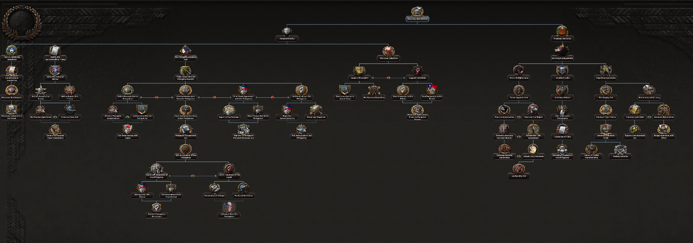
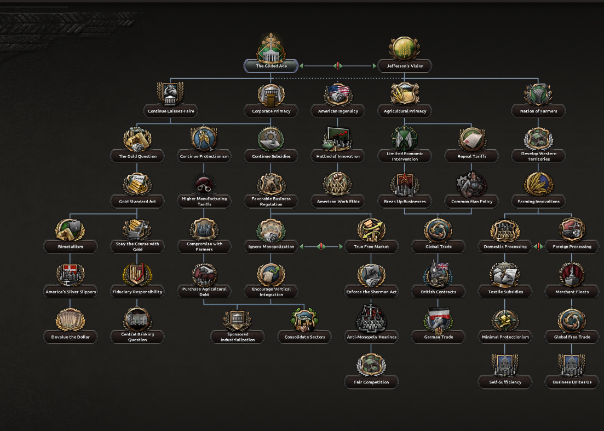
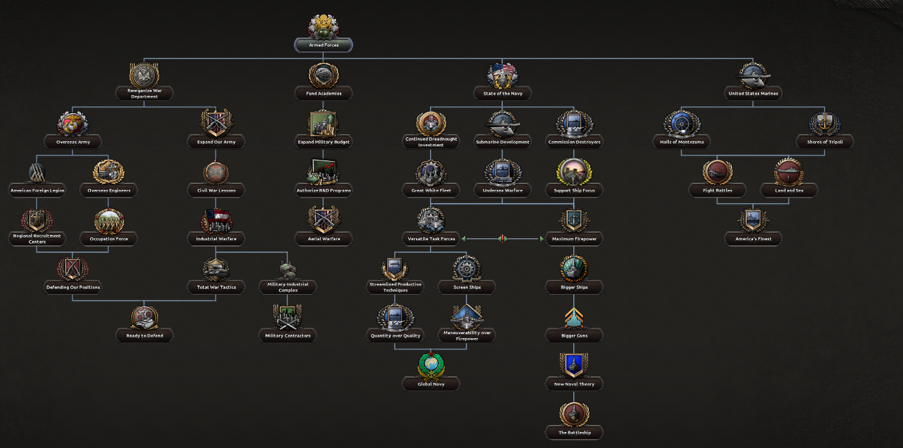
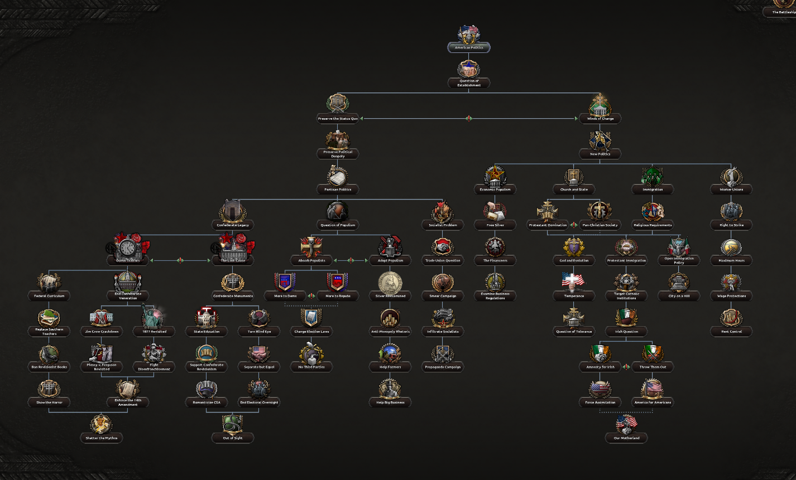
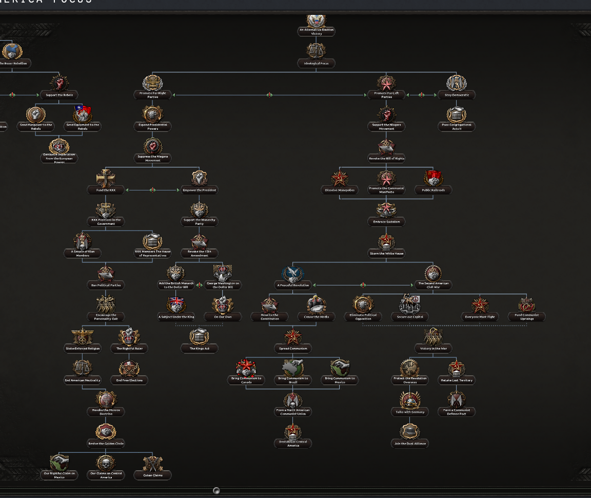
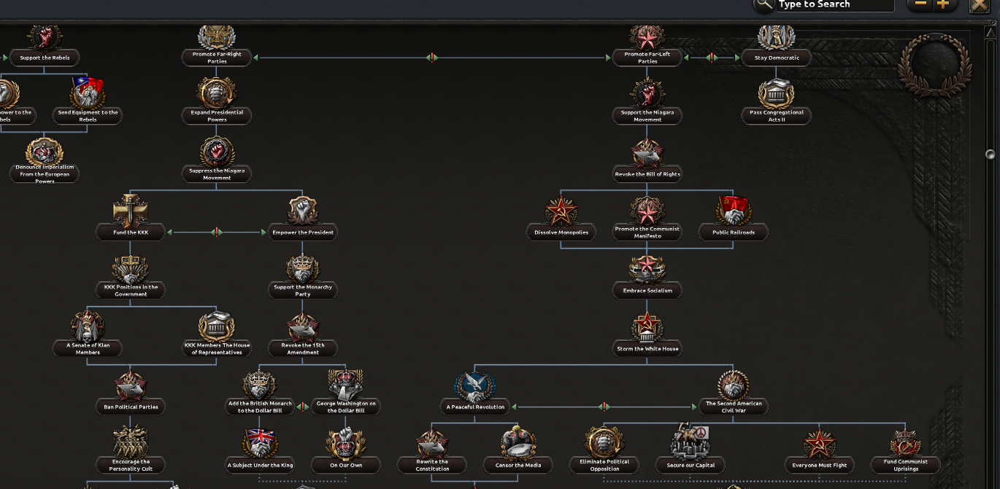
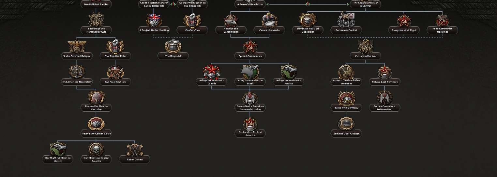

Hello, we have prepared the first RoN diary.
In the last week we moved the mod forward quite a lot. We finished a lot of stuff while starting new mini project.
American DNC Focus Tree
Thanks to Mike's work we have a fully fleshed out American focus tree for the DNC era.







New Starting Screen
Thanks to me, Xaelor we have reduced the popup spam from the beggining, making everything more clear, accessible and less laggy.
The Great War RolePlay Integration
At this moment most of the team is focused on integrating this mod to make WW1 more fleshed out while making it compatible with the current Rise of Nations mechanics.
1.6.1 Mini Update
We have decided to release a mini update 1.6.1 in order to fix major issues with the release of Götterdämmerung DLC and Rise of Nations - Final Strike. Because the next update will not be released in the near future the new starting screen is also included to give you this great QoL change.
Full 1.6.1 changelog
Additions
- Czechoslovak characters revamped (1900-1992)
- Nazi ideologies now have a custom ideology icon
Bugfixes
- Austria-Hungary won’t always go democratic on historical
- Alaskan Territory is not Alaksan Territory anymore
- Ethiopia owns its own territory after 1946
- Map mode icons now appear correctly
- Technology icons display in the correct place